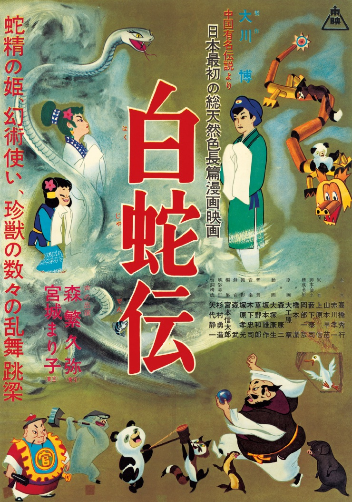
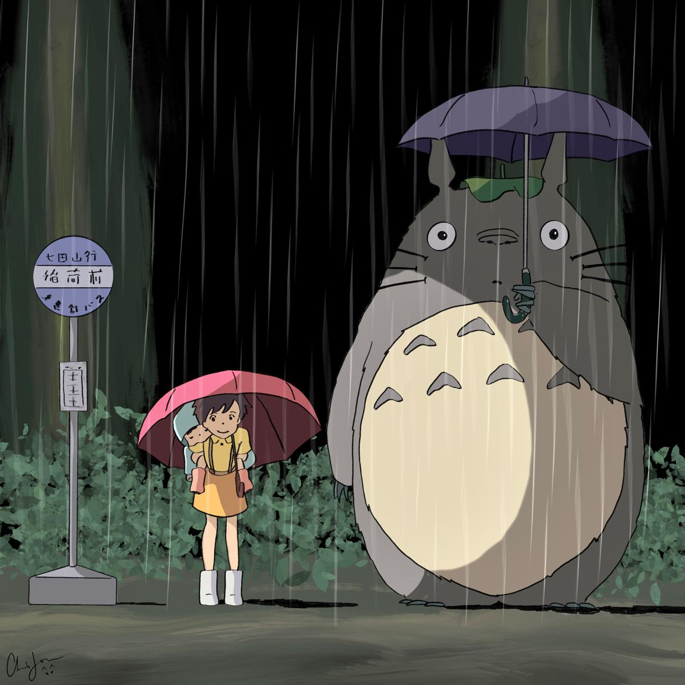
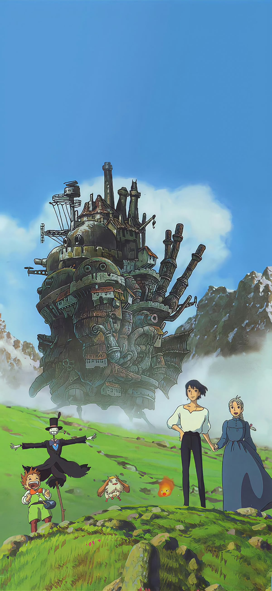
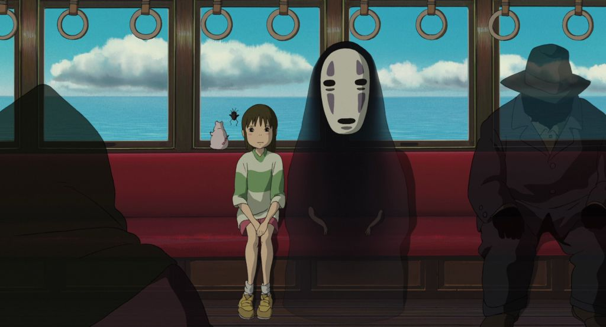
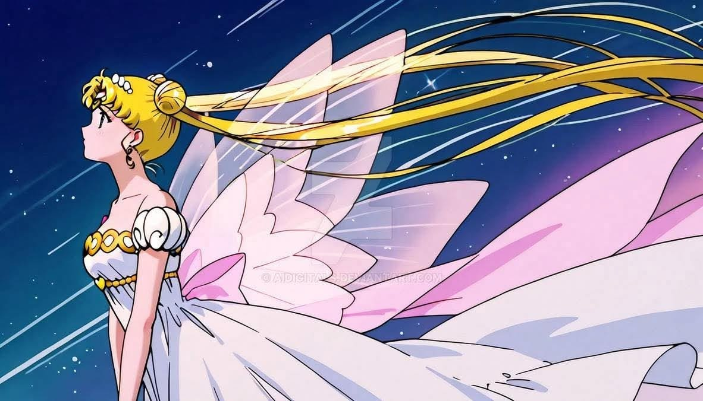

The Origins of Anime

Anime has become a worldwide obsession, but its journey began over a century ago in Japan. The first Japanese animations appeared in 1917, inspired by other animated films from different countries. These creators experimented with hand drawn animation and paper cutout techniques which created short films.
During the 1920s and 1930s, Japanese animation kept developing regardless of the challenges like the Great Kanto Earthquake in 1923 which destroyed many studios. As years went on the discovery of sound and color films created new challenges for Japanese animators. Despite these challenges, artists gained international acknowledgement for their creative and unique animation techniques.
After World War II, Japan's animation industry started to rebuild itself. In 1956, Toei Doga (Toei Animation) was created with the goal of becoming as big as Disney. Their first film The Legend of the White Snake (1958), inspired many future animators including Hayao Miyazaki.
The Birth of Modern Anime
During the 1960s, anime began transforming into the style that audiences recognize today. One of the most influential figures during this time
was Osamu Tezuka, people often say his work helped
shape modern anime by introducing cinematic storytelling techniques, detailed characters, and expressive animation styles. He also shared production techniques that made television animation more affordable.
The release of the anime Astro Boy was a big turning point in anime history. As Japan's first successful anime series, it brought millions of viewers to watch weekly episodes and proved that animation could appeal to people beyond young children. Instead of making short films, studios began creating longer series with memorable characters and unique storylines that kept viewers coming back each week for weekly episodes.
This also encouraged new animation studios and inspired future creators, including artists who now work at Studio Ghibli. The innovations of the 1960s played a big part in current animation, storytelling and production methods that influence anime now.

Anime Becomes a Global Phenomenon

Throughout the 1980s and 1990s, anime began reaching audiences outside of Japan. Films and television series introduced international viewers
to Japanese animation, creating a growing fanbase around the world. Series such as Dragon Ball, Sailor Moon, Naruto, and Pokémon became popular
worldwide and helped introduce millions of people to anime.
Studio Ghibli also played an important role in bringing anime to global audiences. Their films became known for beautiful animation, memorable
characters, and meaningful stories that explored themes such as nature, friendship, and humanity. Anime was no longer seen as only a Japanese
form of entertainment, it became a global art form for people of all ages and backgrounds. It built a community that is still striving now.
Studios That Shaped Anime
Many animation studios have contributed to the growth and success of anime. Each studio has developed its own unique style and helped create stories that continue to inspire fans around the world.
Studio Ghibli
Famous for its breathtaking worlds, emotional storytelling, and themes connected to nature and imagination.

Toei Animation
One of Japan's oldest animation studios. It has created many famous series and has played a major role in making anime popular worldwide.

Madhouse
Known for creative storytelling and high-quality animation, Madhouse has produced many influential anime films and television series.